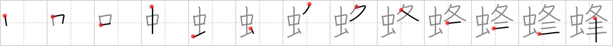

蜂
← →
bee

Reading:
On-Yomi: ホウ — Kun-Yomi: はち
Heisig story:
Insect . . . walking legs . . . bushes.
Koohii stories:
1) [mcfate] 31-12-2007(62): A bee is an insect with a pointy (see summit (#1562 峰)) stinger.
2) [sgrant] 22-1-2010(37): I got stung by an insect walking through the bushes, I think it was a bee.
3) [Peppi] 27-7-2009(10): Many people think bees are insects with fur. But that is not correct! The "fur" is actually the pubic hair (bush under walking legs).
4) [mantixen] 28-7-2009(9): The insect that interrupted our tryst (#2417 逢) was a bee!
5) [HolyKotor] 12-12-2011(3): Most people don't know that the hair covering a bee (insect) isn't fur, but actually pubic hair. Little known fact.